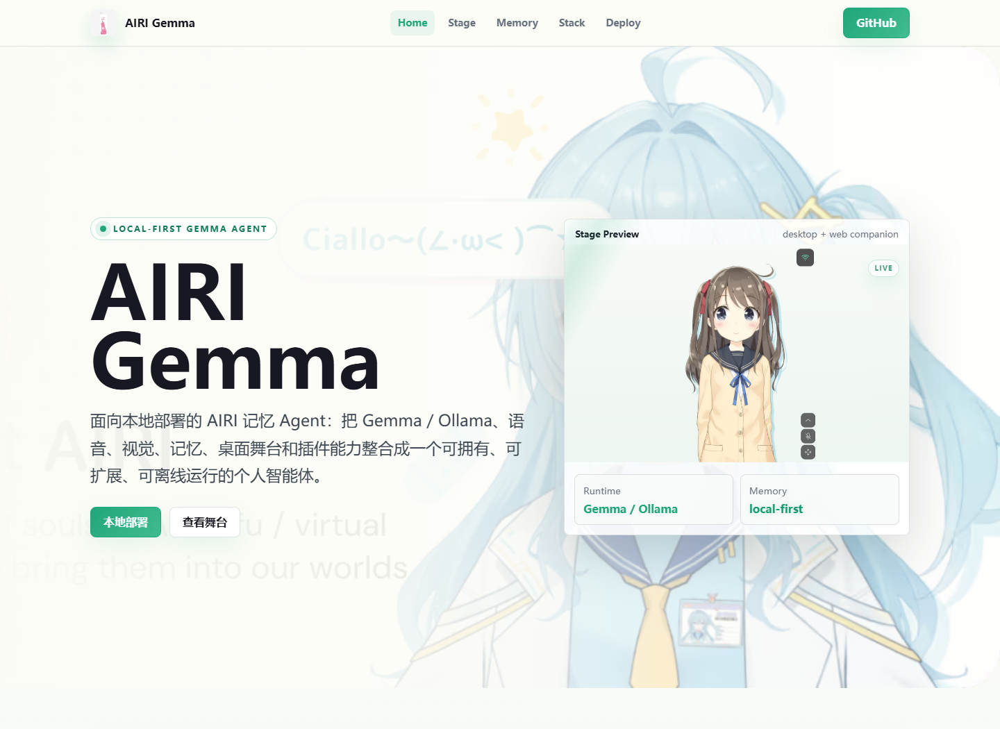

CASE 03 · C-END COMPANION / LONG-TERM MEMORY STRATEGY
AIRI Memory Agent
面向 C 端陪伴对话的跨会话记忆系统：由我开发长期记忆与冲突审核模块，把「可核实的事实记忆」与「角色语气行为」解耦。
C 端长期陪伴式角色对话与知识沉淀
独立开发长期记忆提取、审核台（Review Workbench）与冲突检查链路
Gemma / Ollama · 本地 RAG · Obsidian / LLMWiki · LoRA Candidate
公开项目展示站、演示与开源代码仓库

如果把所有聊天记录直接塞进向量库，陪伴式 Agent 很快就会「记忆错乱」
在 C 端陪伴与角色扮演场景中，用户希望 Agent 记住自己的偏好、近期经历和约定。但直接将原始多轮对话全量写入 RAG 向量库会引发三个典型的产品体验问题：
- 玩笑与事实混淆：用户在角色扮演中的随口玩笑或模型自身的幻觉回答被当成「客观事实」存入记忆，后续反复被错误召回。
- 新旧记忆冲突：用户的状态或偏好发生变化后，旧记忆没有被更新或归档，导致 Agent 在同一轮对话里自相矛盾。
- 事实记忆与角色语气耦合：直接拿未经筛选的对话做微调，容易让模型学到错误事实，或为了记事实而丢失原有的角色人设语气。
个人贡献：开发「提取 → 审核与冲突检查 → 入库 → 候选数据导出」闭环
01 多源输入（对话 / Markdown / Obsidian） → 02 记忆提取与冲突检测 → 03 Review Workbench 审核确认 → 04 长期记忆入库与 RAG 召回 → 05 Dream Cycle 导出 LoRA Candidate
我在 AIRI 开源生态基础上，负责设计并开发了整套长期记忆与知识治理模块：
- 结构化记忆提取与来源标记：从日常角色对话与本地 Markdown / Obsidian 笔记中抽取出候选事实条目，保留时间戳与对话来源上下文。
- Review Workbench 审核与冲突纠错：在写入正式记忆库前设置审核缓冲层，自动比对已有记忆中的潜在冲突（如偏好变更、重复或矛盾描述），支持用户/开发者一键确认覆盖、合并或丢弃。
- 双通道消费（RAG + LoRA Candidate）：通过审核的高置信度记忆一方面进入本地 RAG 供跨会话实时检索，另一方面通过 Dream Cycle 导出为干净的 LoRA 候选训练数据。
核心策略取舍：先做「可审核、可撤回的白盒记忆」，再谈端到端微调
- 取舍 1 · 事实走 RAG，人设走 Prompt / 微调：明确切分「需要随时增删改的动态事实」与「稳定的角色说话风格」。动态事实一律通过审核后的本地 RAG 注入，避免每次修改记忆都要重新训练模型。
- 取舍 2 · 宁可多一步审核，也不让脏数据静默入库：针对长期陪伴场景，一条错误的长期记忆对用户信任感的破坏远大于少记一条闲聊。因此优先落地 Review Workbench 纠错机制。
已实现什么，证据在哪里
项目已完整打通本地 Gemma / Ollama 角色反应、Markdown / LLMWiki 摄取、Review Workbench 记忆审核以及高质量记忆导出 LoRA candidate 的代码链路，并提供可交互的项目展示页与演示。
诚实边界：当前已验证「记忆提取—冲突审核—RAG 检索—候选数据导出」工程与交互闭环；导出 LoRA 候选数据不等同于已在大规模数据集上证明微调收益，也未虚构商业化 C 端留存率数据。
下一步如何评估记忆策略效果
围绕 C 端记忆体验，后续评测重点关注三项指标：跨会话事实召回准确率（Precision@K）、新旧偏好冲突覆盖成功率，以及记忆被手动删除/修正后的零残留率（防止被删记忆再次召回）。
以上为产品评测方案与指标设计，严格区分已落地的记忆审核功能与下一步定量实验。